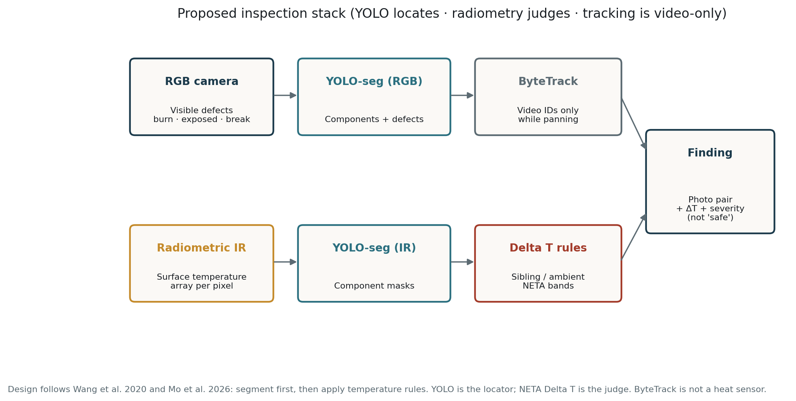
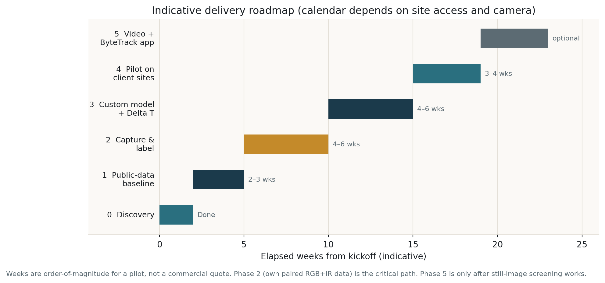
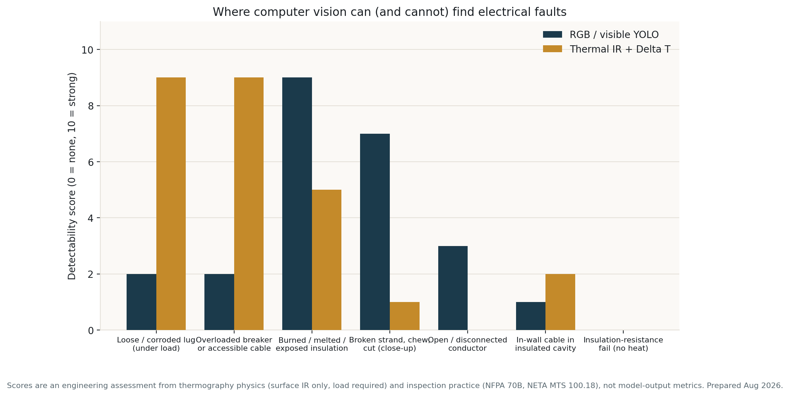

Detailed project proposal · Pilot
Infrared thermography is already used to find hot joints and overloaded circuits. Research from 2012–2026 shows that YOLO-style detectors can find equipment in thermal images, and that severity should be scored from temperature difference (Delta T), not from a model guessing “loose lug” versus “overload.” What does not exist is a ready-made model for your distribution boards. That is the pilot: collect paired visible and thermal pictures of accessible equipment, train a detector on that domain, and produce a repeatable screening report.
Electrical problems that start fires or take a building offline often show up as heat (loose or corroded connection, overloaded breaker or cable) or as visible damage (burned insulation, exposed copper, chewed or broken sheath). Today those signs are found by a person with a torch and, if available, a thermal camera. Results vary with skill, load at the time of the visit, and how carefully each frame is reviewed.
We will build a repeatable inspection pipeline that:
If the pilot succeeds you will have: a labeled dataset of your equipment, a trained still-image model (video later), a capture protocol, and a written list of what the system can and cannot see.
| ID | Objective | How we know it is met |
|---|---|---|
| O1 | Prove the software toolchain on public thermal and cable-damage images | Trained YOLO baseline and a short demo |
| O2 | Capture paired visible + thermal data of your accessible boards under load | 300–800 labeled paired frames across several boards, with metadata |
| O3 | Train detectors on your equipment | mAP on a held-out board (not a random split of the same panel) |
| O4 | Score heat using Delta T inside each detected part | Sibling and ambient ΔT in the report; NETA band attached |
| O5 | Still-image screening report a person can use on site | Visible + thermal photo, ID, ΔT, load note, action band |
| O6 | State detection limits in writing | User-facing “cannot detect” list signed off with you |
| O7 | (Optional) Track the same part across a pan video | ByteTrack IDs; no duplicate alerts for one hot lug |
Fees, intellectual property, and a production rollout would be a separate agreement after the pilot.
Every item below is something we will study, measure, or explicitly rule out — not a promise that the software will find all electrical problems.
Accessible equipment only: main and sub distribution boards / consumer units (closed cover, then open dead-front with a qualified electrician); MCBs / MCCBs / RCDs; incoming lugs; neutral and earth bars; busbars; accessible cable tails, tray or surface runs, glands and junctions; sockets, switches and isolators that can be photographed under load. Optional later: plant-room trays, generator / UPS boards if you provide access.
Not in this pilot: conductors buried in plaster, insulation or conduit with no surface heat; underground services; high-voltage UAV line inspection; live work by anyone other than a person qualified under your safety rules.
| Fault / condition | What we investigate | RGB | Thermal | How we test |
|---|---|---|---|---|
| Loose or corroded lug | Hotter than a sibling on the same bus under load? | Weak | Strong if loaded | Loaded capture; electrician-confirmed cases; optional staged lug on a training board only |
| Overloaded breaker or accessible cable | Hotter than neighbours on similar duty? | Weak | Strong if loaded | Two load levels if possible; clamp-meter note |
| Failing / hot breaker | One pole vs the bank | Weak | Strong | Sibling ΔT on the same row |
| Phase imbalance (if 3-phase) | Three phases thermally inconsistent? | No | Medium | Compare three poles in one frame |
| Burned / melted insulation | After-the-fact visible damage | Strong | Medium | RGB close-ups, labeled defects |
| Exposed copper / missing sheath | Visible conductor | Strong | No unless also hot | RGB exposed_conductor |
| Broken strand, cut, chew (close-up) | Mechanical damage on accessible cable | Medium–strong | No | RGB close-ups; discarded samples allowed |
| Open / disconnected conductor | Break with no current | Only if visible | No heat | Documented as out of thermal reach |
| In-wall insulated cable | Surface temperature on plaster | Almost never | Rare / faint | A few wall scans only to show the limit, not to sell the feature |
| Insulation-resistance fail, no heat | Electrical test fault | No | No | Not a computer-vision task; remains an electrician test |
| Intermittent fault not present at capture | Load / time dependent | No | No | We investigate capture timing and load protocol |
| IR lies (shiny metal, reflections) | False hot / cold | — | We will study this | Sibling ΔT; error gallery; optional high-e tape in lab |
NFPA 70B (2023) §7.4 — document Delta T under similar load. NETA MTS Table 100.18 — action bands. Wang et al. (IEEE TIM 2020) and Mo et al. (Scientific Reports 2026) — segment the object, then apply temperature rules. Liu et al. (IEEJ 2025) — find the component first, then the hotspot. Zhang et al. (ByteTrack, ECCV 2022) — identity in video, not heat. Jadin & Taib (2012) — heat often precedes failure.
We will not claim 95–99% field accuracy. Those published figures are on substations, switchgear, or simulated cables — not on your consumer units.
Literature, dataset survey, feasibility limits, this proposal. You already have this pack.
Set up Ultralytics YOLO-seg; train on 1–2 public sets (RGB cable-damage and/or IR equipment); run a demo that shows the domain gap on generic panel photos. You receive a short image demo and a one-page note. This is not the production model.
Specify the radiometric camera; shot list and metadata; capture with your qualified electrician; closed cover, open board, close-ups, optional second load, 10–20 s pan; label RGB (components + visible defects) and IR (components); split by board ID. You receive the private labeled set and class counts. You provide access, electrician, load, and anonymised site codes.
Fine-tune YOLO-seg on your labels; read temperature inside each IR mask; ΔT versus siblings and ambient; NETA bands; fuse RGB defects with IR severity; still-image report generator. You receive pilot weights, a way to run one image pair, example reports, and accuracy on the held-out board.
Run on boards the model has not seen; electrician marks true/false; measure false-clears and false alarms; write the SOP (stance, load, how to read the report); freeze the “cannot detect” list. You receive the pilot report, error gallery, SOP, and a go / no-go for a later product phase.
ByteTrack so a hot breaker keeps the same ID while panning; suppress duplicate alerts. Starts only after still images are trustworthy.
We agree in writing: sites and board types; who may open live panels; camera supply or purchase; whether a dedicated training board may be used for staged faults; anonymisation; that the software must never display “safe” or “passed inspection.”
Roboflow or CVAT, YOLO-seg export. RGB v1 classes: board, breaker, busbar, cable, outlet, lug, plus burn_mark, exposed_conductor, broken_cable, melted_plastic. IR v1: the same component names — we do not spend weeks labeling IR as overload versus loose; heat is scored by Delta T. Spot-check 10% of labels. Train/val/test = different boards.
Each finding: object ID; component type; visible defect yes/no; T and both Delta Ts; NETA-style action; load note; cover on/off; side-by-side RGB and IR crop.
The network finds the object. The temperature rule and a person find the fault.

| # | Deliverable | When |
|---|---|---|
| D1 | This proposal, capture protocol, paper notes | Now |
| D2 | Public-data baseline demo and domain-gap note | End WP1 |
| D3 | Camera specification (radiometric minimum) | Start WP2 |
| D4 | Labeled paired dataset of agreed sites (private) | End WP2 |
| D5 | Trained RGB and IR YOLO-seg (pilot weights) | End WP3 |
| D6 | Delta T module and still-image report samples | End WP3 |
| D7 | Pilot accuracy: mAP, false-clears, error gallery | End WP4 |
| D8 | Site SOP for the electrician / operator | End WP4 |
| D9 | Written limits of detection | End WP4 |
| D10 | Optional video tracking demo | WP5 |
Indicative duration, not a quote: WP1 2–3 weeks; WP2 4–6 weeks (access-bound); WP3 4–6 weeks; WP4 3–4 weeks.

Opening an energised board is an arc-flash and shock hazard. Cover-off capture is done only by a person qualified to do that work. Every thermal “all quiet” is not a bill of health. Unloaded circuits, closed covers, shiny metal, and intermittent faults will be called out in the SOP so operators do not over-trust the tool.
| Risk | What we do |
|---|---|
| Your boards look nothing like public data | WP1 measures the gap; WP2 is mandatory |
| Camera has no radiometry | We stop Delta T and specify a camera |
| Capture on a quiet day | Tag low load; reschedule peak load |
| Shiny copper fools IR | Sibling comparison; error gallery |
| Too few real faults | Safe staged faults on a training board; oversample defects |
| “No box” read as “no danger” | Report footer and SOP; never print “safe” |
| Same board in train and test | Split by board ID |

A shorter briefing exists as CLIENT_PROPOSAL.html. This document is the detailed statement of work.
Jadin & Taib, Infrared Phys. Technol. 2012. Wang et al., IEEE TIM 2020. Xia et al., High Voltage 2021. Zhang et al., ByteTrack, ECCV 2022. NFPA 70B 2023 §7.4; NETA MTS Table 100.18. Tao et al., Appl. Sci. 2025. Liu et al., IEEJ 2025. Mo et al., Sci. Rep. 2026. Full paper cruxes: papers.md.